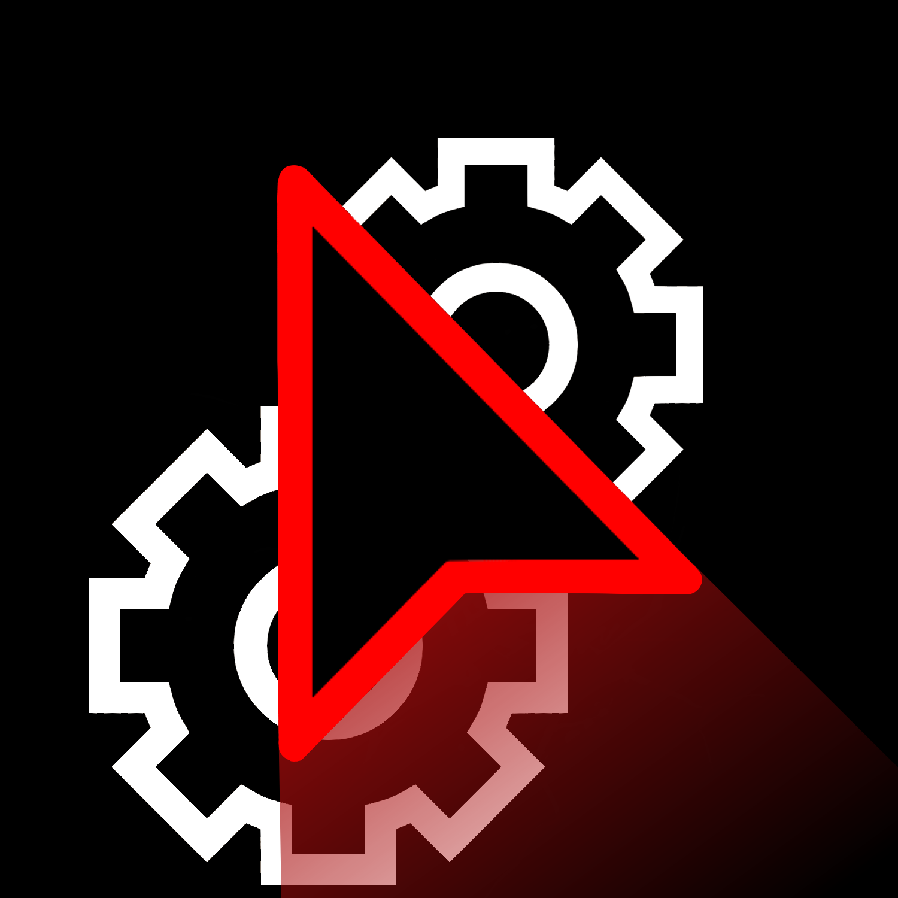
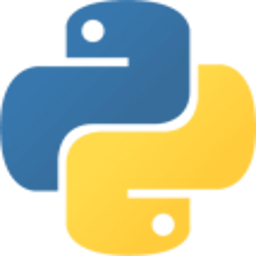

О программе
"Антивирус Монтировка" - это набор утилит предназначенных не только для удаления самих вирусов, но и их последствий. При этом не только в ручную, но и полу автоматически.
Ключевые отличия
"Антивирус Монтировка" - это не обычный антивирус в привычном понимании. Большинство антивирусов о которых вы знаете - являются антивирусными "сканерами". Но Антивирус "Монтировка" не является антивирусным сканером, вместо этого используются более универсальные методы.
Проект является свободным программным обеспечением на Python и распространяется по лицензии GPL v3. А значит каждый может узнать как работает программа и помочь в разработке
Статус проекта
Учтите, что проект находится в стадии активной разработки, а именно в beta! А также на данный момент средства полуавтоматического обнаружения не доделаны до конца! Однако программой уже вполне можно пользоваться, большая часть функционала уже реализована, а стабильность программы по сравнению с Pre-Alpha намного выше.
Технические характеристики
- Размер: ~20 МБ
- Потребление ОЗУ: ~30-130 МБ
- Тип файла: .EXE
- Производительность: Высокая
- Интерфейс: Лёгкий, на базе tkinter, без иконок
Установка Антивируса Монтировка
Для установки выполните следующие шаги:
- Перейдите на официальный сайт
- Нажмите на кнопку "Скачать исходный код"
- После того как вы попали на гитхаб, нажмите на пункт "релизы"
- Затем вы можете выбрать версию. Если вы хотите протестировать программу без полноценной установки - то ваш выбор "Готовый Антивирус Монтировка". Если же вы хотите установить и полноценно настроить программу под себя - то тогда ваш выбор "Установщик Антивируса Монтировка"
- После выбора скачайте из ресурсов .exe файл или .zip архив. Если вы скачиваете установщик, также скачайте архив с исходным кодом (sourcecode.zip)
- Если скачали готовый файл просто запустите его. Если установщик - то распакуйте архив (crowbar_antivirus_setup.zip) ЖЕЛАТЕЛЬНО не на рабочий стол! (так как в этом каталоге будет создано много файлов). Запустите установщик и следуйте его инструкциям.
Системные требования для установки
- Операционная система: Windows 10 и выше
- Для Компиляции (установки) программы ~1GB свободного места на диске. Итоговый вес программы будет ~20MB.
Минимальные требования
Для корректной работы Антивируса Монтировка необходимо:
Аппаратные требования:
- Процессор: windows 10 - запустилась с первого раза? Тогда хватит
- Оперативная память: windows 10 - запустилась с первого раза? Тогда хватит
- Место на диске: для Компиляции (установки) программы ~1GB свободного места на диске. Итоговый вес программы будет ~20MB.
- Видеокарта: windows 10 - запустилась с первого раза? Тогда хватит
Программные требования:
- ОС: Windows XP, Windows Vista, Windows 7, Windows 8, Windows 10, Windows 11
- Python: (Для установки) версия 3.12 и выше
- Права доступа: требуются права администратора
Сетевые требования:
- Интернет: Не требуется
- Обновления: Скачивайте новый архив с исходным кодом в программе откройте настройки и выберите этот архив
Компоненты Антивируса Монтировка
Программа состоит из так называемых "Компонентов", это полноценные утилиты которые взаимодействуют между собой, что даёт Антивирусу Монтировка мощный функционал. Нажмите на название компонента в меню слева для подробной информации.
Мастер Автозагрузки
Функционал: Управление всей автозагрузкой ОС виндовс. Доступно не только удаление, но и изменение (если доступно для типа автозагрузки). Есть система оценивания угрозы значения автозагрузки в %. Также доступно удаление исполняемого файла и заморозка/убийство процесса данного файла.
Принцип работы: Компонент читает системные параметры автозагрузок (пользовательская, реестр и планировщик) анализирует значение и выводит результат по вкладкам в таблицу.
Применение: Помимо удаления вирусов из автозагрузки, данный функционал можно использовать на обычном ПО для оптимизации ОС.
Менеджер Процессов
Функционал: Полное управление всеми запущенными процессами в системе (заморозка, разморозка, изменение критичности и убийство процесса).
Принцип работы: Загружает список всех запущенных процессов и их данные в таблицу (PID, имя, исполняемый файл, статус работы, критичность и пользователь). Также позволяет принудительно завершать процессы, включая те, которые не поддаются стандартному диспетчеру задач виндовс.
Применение: Безопасная заморозка или закрытие процессов вредоносного ПО.
Файловый Менеджер
Функционал: Навигация и все базовые операциями с файлами, поиск, получение прав на каталог или файл, а также интеграция с Редактором файлов для их редактирования.
Принцип работы: Загрузка всех каталогов и файлов с указанного каталога без исключений. Поиск происходит в отдельном потоке и загружает результаты постепенно (однако для оптимизации итоговая сортировка и возможность сортировать таблицу произойдёт после окончания поиска. Получение полных прав на каталог или файл происходит через команду icals
Применение: Удаление вредоносных файлов из защищённых каталогов, а также базовые операции с файлами.
Разблокировка всего
Функционал: Разблокировка ограничений групповых политик и дебагеров, а также блокировки доменов в hosts.
Принцип работы: Изменение значений в реестре, однако вместо тупого прописывания каждого ограничения и его нужного значения, данный компонент циклом перебирает все параметры меняя их значения, но система исключений позволяет гибко настраивать сброс ограничений даже на ПК в офисах или корпорациях, чтобы не повреждать конфигурацию ОС. Также данный Компонент автоматически проверяет и при необходимости восстанавливает значения параметров шрифтов в реестре.
Применение: Подготовительная или итоговая очистка последствий.
Менеджер Пользователей
Функционал: Управление локальными пользователями (создание, удаление и изменение пароля).
Принцип работы: Использование API виндовс, и возможность менять пароль пользователя на указанный.
Применение: Удаление вредоносных локальных учётных записей, восстановление контроля над системой.
Редактор файлов
Функционал: Редактирование текстовых файлов (.txt, .bat, .ini и т.д), а также написание скриптов для Антивируса Монтировка. Также доступен поиск по тексту.
Принцип работы: С обычными файлами и поиском всё тривиально, а редактирование скриптов происходит как с обычным текстом, но при сохранении скрипт шифруется - это сделано для безопасности. (при открытии скрипт автоматически расшифруется).
Применение: Редактирование скриптов и чтение логов.
Обработчик Скриптов
Функционал: Позволяет программе исполнять пользовательские скрипты.
Принцип работы: При передаче аргументов, открывает текстовые файлы в редакторе файлов, а если это был скрипт расшифрует его и выполнит.
Применение: Для упрощения диагностики или удаление вирусов.
Перезапуск ОС
Функционал: Выполняет перезапуск через встроенные команды виндовс.
Принцип работы: Выполнение перезапуска разными методами (запуск .bat файла, выполнение команды, выполнение команды через api виндовс).
Применение: Принудительный перезапуск в случае блокировки перезапуска через пуск или сочетания клавиш.
(Pre-Alpha) Защита в Реальном Времени
Функционал: Полуавтоматическая защита в реальном времени.
Принцип работы: Анализ всех процессов на подозрительные факторы (название совпадает с названием системного файла, избыточная нагрузка на компоненты ПК и т.п).
Применение: Полуавтоматическая диагностика.
Очистка Кэша
Функционал: Очистка кэша (каталог %Temp%).
Принцип работы: Удаление всего содержимого %Temp% с логированием.
Применение: Очистка кэша вредоносного ПО или определения запущенных файлов в %Temp%.
Браузер
Функционал: Браузер система вкладок, возможность посещения онлайн, офлайн страниц, а также открытия html кода напрямую из переменной.
Принцип работы: Просто браузер на базе PyQt6 без лишнего и со стандартными защитами окна.
Применение: Просмотр документации (справки) и посещение онлайн страниц и скачивание файлов, не привлекая внимания вредоносного ПО.
Замена системных файлов
Функционал: Позволяет заменить редко используемые системные файлы на другую программу, чтобы обойти защиту вредоносного ПО. Восстановить системные файлы можно одной кнопкой.
Принцип работы: В среде восстановления системные файлы не защищены - поэтому замена достаточно легка.
Применение: Обход защиты вируса.
Запуск от администратора
Функционал: Запуск любых операций с повышенными правами.
Принцип работы: Если программа запущена от имени администратора то и другие программы запущенные от неё будут иметь права администратора.
Применение: Выполнение действий, требующих права администратора (например системные команды такие как sfc /scannow).
Пугало от вирусов
Функционал: Создание программ "обманок" полная структура файлов и значения в реестре реальных антивирусных программ или имитация работы в виртуальной машине - заставляют вирусов стилеров обходить вашу ОС стороной дабы не попасть в базу антивирусных сканеров.
Принцип работы: Компонент содержит списки файлов, параметров и других данных реальных программ которые он просто создаёт.
Применение: Пасивная защита от стилеров.
(Pre-Alpha) Менеджер Установки
Функционал: Отслеживание активности программы и мониторинг изменений.
Принцип работы: Мониторинг файловой системы, реестра, сетевой активности и активности процессов.
Применение: Установка программ через этот компонент позволит не только определить является ли ПО вредоносным нг и откатить изменения даже если это ПО не вредоносное.
Почему мы?
Антивирус Монтировка предлагает уникальный подход к защите и очистке системы, сочетая гибкость ручного управления с эффективностью полуавтоматических инструментов. В отличие от обычных антивирусов, мы фокусируемся не только на обнаружении угроз, но и на полном устранении их последствий. Также в отличие от других антивирусов в которых скудный выбор настройки, Антивирус Монтировка даёт полную свободу действий как минимум потому, что Антивирус Монтировка является open-source Программным Обеспечением.
Коммерческое использование
Использование Антивируса Монтировка в коммерческих целях на данный момент строго запрещается! Это и касается произвольных "форков", без нашего согласия вы не имеете права продавать или использовать Антивирус Монтировка в коммерческих целях.
Обновления
Для обновления вам необходимо скачать новую версию исходного кода (sourcecode.zip), открыть настройки программы и выбрать данный архив с новой версией, указать необходимые значения и выполнить компиляцию (это требует установленного python3.12+ и всех библиотек).
Вопросы и ответы
Что такое Антивирус Монтировка?
Это набор утилит для удаления вирусов, их последствий с открытым исходным кодом.
Нужны ли права администратора?
Да, для большинства функций требуются права администратора.
Конфиденциальность
Однако мы будем рады если вы отправите логи программы нам на почту (operawifi.mini.net.win.2000@gmail.com), в логах не содержится чувствительная или конфиденциальная информация (функция анонимных отчётов в разработке). Но это поможет в разработке программы.
Контакты
Создано благодаря:

NEO Organization
При поддержке:

Departament K
Программисты:
AnonimNEO
Язык программирования:
